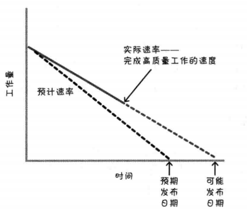
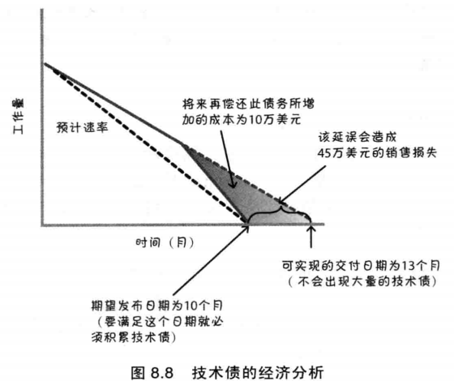
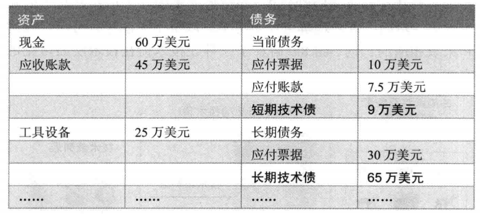
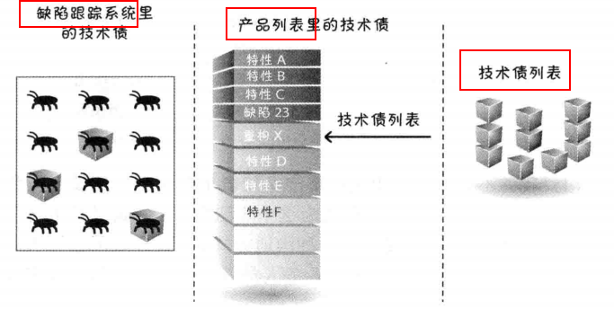
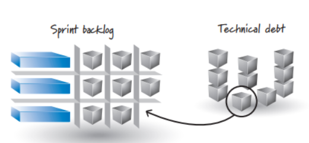

1 技术债的定义
技术债指我们有意选择的捷径，或可能损害软件系统的不良实践。例如下面常见的几种：
- 不合适或糟糕的设计
- 测试覆盖不充分
- 手工测试过多
- 集成和版本管理不善
- 缺乏平台经验
就像财务债，技术债也需要支付利息，通常是以额外补做开发工作的形式。我们可以选择继续支付利息（绕过问题），也可以选择偿清本金（重构代码等）。
2 技术债的后果
- 爆发点不可预期：到某个临界量，产品会变得不可管理或混乱
- 交付时间延长：当前或许节省了时间，实际却是借用了未来的时候，要还的
- 缺陷数量增加
- 开发和支持成本上升：继续开发新特性？修复现有缺陷？需要更多的成本
- 产品萎缩：产品越来越失去活力
- 可预测性降低
- 表现越来越差
- 挫败感增加：团队成员都倍受挫折，使得开发的乐趣消失殆尽
- 客户满意度降低
3 技术债的起因
- 不可避免的技术债：不管如何预防都会积累
- 低级技术债：团队成员、组织或开发过程不成熟导致
- 策略性技术债：在债务累计收益大于债务成本时，选择承担债务不去修复
低级和策略性技术债一般是迫于如期完工的压力造成的，比如下面两个常见的误区：

- 试图通过加班提高速率，而不是修改范围或延长交付日期
- 减少测试以提高速率
4 管理技术债
管理应计技术债
- 使用良好的技术实践：停止向产品增加低级债务，采用简洁设计、测试驱动、持续集成、自动化测试、重构等技术
- 使用强完成定义：所有相关任务都完成，才算一个story完成，不能把一些之前该完成的工作拖到后期
- 理解技术债经济：正确理解技术债如何影响决策：

让技术债可见
- 在业务层面可见：量化技术债，在资产成本表中显示，可以让产品负责人有清晰的评判：

- 在技术层面可见：可以将技术债作为列表，或加入产品开发列表，或专门的bug跟踪系统，以保证不会被遗忘

偿还技术债
五大选择方式：
- 并非所有的技术债都应该偿还：比如如下情况不需要偿还技术债
- 行将就木的产品
- 一次性的原型产品
- 短命产品
- 童子军原则，有债就还：每次改动代码，就要尝试让产品设计和实现更好，而不是更差。团队需要流出一定比例的实践用于偿还技术债。
- 提高每个user story的点数
- 在sprint plan meeting上专门留出计划的时间
- 先偿还高利息的技术债
- 分期偿还技术债：将技术债务分摊到每个sprint中，分阶段完成
- 一边做有客户价值的任务，一边偿还技术债
